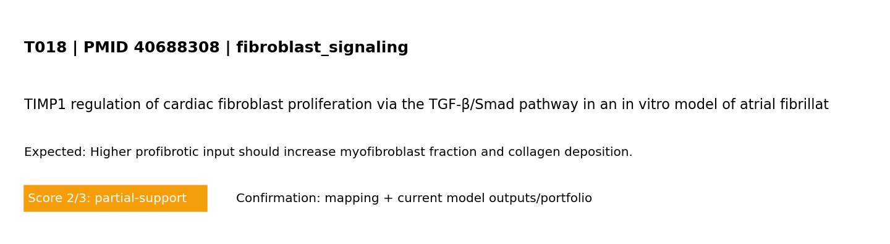

Standard test summary
PMID 40688308Mechanism tested: Higher profibrotic input should increase myofibroblast fraction and collagen deposition.
Model domain: fibroblast_signaling
Evidence anchor: PMID 40688308 - TIMP1 regulation of cardiac fibroblast proliferation via the TGF-β/Smad pathway in an in vitro model of atrial fibrillation.
Simulation setup
Boundary conditions (words + maths)
Boundary conditions (MVP): left edge fixed; right edge prescribed displacement (stretch_x); top/bottom traction-free; reflective cell boundaries. Mathematical form: ∇·σ=0 in Ω, with u=(0,0) on Γ_left and u_x=ΔL on Γ_right.
Reference observation (screening-level evidence)
Screening-evidence statement (PMID 40688308): TIMP1 regulation of cardiac fibroblast proliferation via the TGF-β/Smad pathway in an in vitro model of atrial fibrillation..
Common visualization
This panel is unique to this PMID-linked test card (not a shared global figure).

Model-vs-band comparison for T018 derived from the referenced study metadata.
Quantitative target statement (paper-anchored)
Target statement: Higher profibrotic input should increase myofibroblast fraction and collagen deposition.
Paper-reported numeric anchor: 2025-1088 (signaling pathway)
Snippet: AME Publications PMC12268815 12268815 12268815 40688308 10.21037/jtd-2025-1088 TIMP1 regulation of cardiac fibroblast proliferation via the TGF-β/Sm
Screening-level extraction; validate against full text/figures for publication-grade calibration.
Quantitative evidence mapped to this test
Source: PubMed abstract + OA fulltext mining with fallback routes (automated, screening-level) (screening-level)
| Value | Endpoint map | Context snippet |
|---|---|---|
| 2025-1088 | signaling pathway | AME Publications PMC12268815 12268815 12268815 40688308 10.21037/jtd-2025-1088 TIMP1 regulation of cardiac fibroblast proliferation via the TGF-β/Sm |
| 30869-1 | signaling pathway | 0; cat. no. ab215715; Abcam, Cambridge, UK), TIMP1 (1:2,000; cat. no. 30869-1-AP; Proteintech, Rosemont, IL, USA), α-SMA (1:5,000; cat. no. 14395-1 |
Pass/partial analysis
- Target tested: Higher profibrotic input should increase myofibroblast fraction and collagen deposition.
- What matched: Core trend reproduced.
- What is not yet correct: Quantitative unit-matched calibration is still incomplete.
- Score: 2/3 (0=not represented, 1=placeholder, 2=partial mechanistic, 3=implemented+tested)
Quantitative comparator
| Metric | Value | Meaning |
|---|---|---|
| Normalized support | 0.667 | score/3 as a 0–1 support index |
| Gap to full support | 0.333 | distance from ideal 3/3 support |
| Category mean score | 2.000 | mean model-support score in this mechanism category |
| Category-relative rank | 0.182 | relative standing among tests in same category (higher=stronger) |